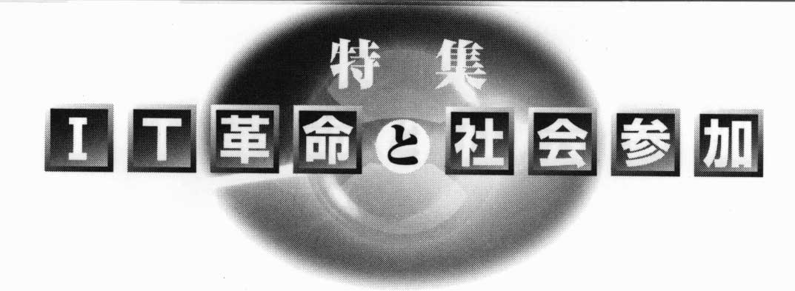

ノーマライゼーション 5月号
「IT革命」と社会参加 河村 宏

10
はじめに
情報が水や食料のように一人ひとりの生存に欠かせないものになってきた。
家庭のデジタルテレビや仕事で使うコンピューターが情報ネットワークとつながり、
必要な時に情報技術(IT)を使えるかどうかで決定的な格差が生まれようとしている。
だれにでも使えるITの開発によって障害者の社会参加を大きく進めるチャンスにできるのか、
また新しい壁を作ってしまうのか、それが今問われている。
「IT革命」
ITとは、Information（インフォメーション＝情報)Technology(テクノロジー＝技術)、
すなわち情報技術のことである。
国連などでは、これにCommunication(コミュニケーション)のCを加えてICT(情報通信技術)と呼ぶことも多い。
日本政府は首相を長とするIT戦略本部を設けて、
①日本独自のIT国家戦略の構築、
②電子商取引を促進するための規制改革等諸制度の総点検、新たなルールづくり、
③電子政府の実現、
④教育の情報化、
⑤情報通信インフラ、ハード/ソフトの整備・促進、
⑥電子商取引を支える制度基盤の整備の方針を打ち出した。
「情報インフラ」であるデジタル回線網、
マルチメディアも送れる広帯域携帯電話、
GPSなどの位置情報システム、
二〇一〇年に完成するとされるデジタルテレビ網等は、瞬時に世界中と情報交換することを可能にする。
情報通信システムが世界中をくまなくカバーした今日、
経済的な条件を度外視すれば、地球上のすべての地域でITの恩恵に浴することができるようになったのである。
11
日本で叫ばれている「IT革命」は、
「情報インフラ」の整備をさらに進めて、企業と行政はもとより、個人の活動をもITを中心に再編成する動きである。
文書作成(ワープロ)、通信(電子メール)、経理処理、広報宣伝(WWW)、投票、行政手続き、
そして個人の消費生活(クレジットカードと電子マネー等)まで、社会全体のあり方が大きく変化しようとしている。
職場ではLANとインターネットにつながる一人一台のパソコンを持って仕事をするようになり、
二〇〇三年からは大都市圏で普通の家庭用テレビのデジタル化が始まる。
テレビが電話やインターネットとつながり、
チケットの予約や通信販売が家庭のデジタルテレビでできるようになるのである。
障害支援技術としてのIT
あらゆる情報を
「オン」か「オフ」かのどちらか一つの値を持つデータの集積として処理することによって成り立つITは、
革命的な支援技術も生み出してきた。
私たちが接するどんなITのシステムも
、大きく分ければ人間とコミュニケーションを行う「入力と出力」と
情報を処理する「内部処理」という二つの系で成り立つ。
人間の機能にたとえれば、目(視覚)、耳(聴覚)、皮膚(触覚)、鼻(嗅覚)、口と舌(味覚)の機能にあたるものが「入力」の機能であり、
手足、声、まぶた、視線、舌など、少なくとも一つの意識的に動かせる身体の部分があれば「出力」機能になる。
「オン」と「オフ」のタイミングを自分で制御できれば、
ITのシステムは原理的に完全に制御できるのである。
支援技術としてのITの目標は、
視覚、聴覚、あるいは触覚に訴えて発信される情報に、少なくとも一つの知覚を通してアクセスし、
一つでも「出力」機能があればシステムを制御できるようにすることである。
記憶、比較、計算等を行って次の行動を準備するのが「内部処理」である。
認知・知的障害あるいは加齢による障害の中には、この「内部処理」のどこかに障害がある場合があり、
それに対しては前述の入出力の問題とは別の角度から取り組む必要がある。
オポチュニティーかディバイドか
「IT革命」が一人ひとりに何をもたらすかは千差万別である。
個人のレベルでは当面、パソコンを使うことができるかどうかが大きな岐路となる。
パソコン自体も大きく変わり、腕時計のようなパソコンや携帯電話に組み込まれたパソコンが出現して、
パソコンの伝統的なイメージが変わっていくと思われる。
インターネットに代表される通信基盤の整備の国と地域による格差も注目されている。
インターネットに安い費用で常時接続できるかどうかは、企業の立地の重要な条件となり、
整備の遅れた地域の産業は空洞化しつつある。
このような状況を受けて、世界中で「デジタル.ディバイド（Digital Divide)」の危険が指摘されている。
ITを使える者と使えない者との間で貧富の格差が生まれ、
個人と地域のそれぞれのレベルで、
新しい「持てる者と持たざる者」とが生まれることによる社会的な不安定の増加が懸念されているのである。
12
前節で論じたように、技術的に見ると、ITは障害者の情報アクセスにとって極めて大きな可能性を秘めている。
その意味で政府の言うデジタル・オポチュニテイー
(デジタル技術がもたらす新たな可能性)を障害にかかわる分野で特に重点的に実現してほしいと思う。
しかし、現在進行中の五〇〇万人IT研修の実態を聞くと、
障害者自身の参加が極めて難しく、
研修プログラム自体も基礎的な障害支援技術としてのITに十分に言及していないように思われる。
このような実態では、せっかくの技術としての機会も格差を増大させる逆効果になりかねない。
ユニバーサル・デザイン
今日のITのもう一つの特徴は、
ハードウエアヘの依存度が低下し、ソフトウエアのみを更新して機能を改善する傾向が強くなってきた。
また、国際的な標準化の動向を見極めて開発されたシステムはいつまでも安定して使えるが、
特に独自の技術を追求したものはすぐに陳腐化して使えなくなるのである。
デジタルテレビに例をとれば、
専用デジタルテレビのほかにパソコンや従来のテレビにアダプターを付けて見ることもできる。
セットトップボックスと呼ばれるテレビの上に置くアダプターは、
そのソフトウエアを自動的にオンラインで更新して最新の機能を持つように設計されている。
現在、テレビと電話はほとんどの家庭に普及している。
生活に文化と潤いを持たせるテレビ番組、あるいはニュースや災害情報は、毎日の生活に欠かせないものである。
子どもから高齢者までさまざまな条件の人々が長く共同で使う大規模なITシステムが、これから本格的に導入されるデジタルテレビである。
このデジタルテレビのすべての番組に
見えない人のための画面解説や聞こえない人のための手話と字幕がつき、
知的に障害がある人や外国人のためのわかりやすいニュースなどが放映されるためにこそITが駆使されなければならない。
アクセスできないITシステムを作ってしまって、
後から支援技術としてのITで補完するというのでは、本末転倒である。
障害をもつ人々の具体的な要求の一つひとつに応えることによってのみ、
デジタルテレビはだれもが使えるシステムに成熟し、
ユニバーサル・デザインの良い事例になり得るのである。
メインストリームヘ
さまざまな障害をもつ人々の要求に最も関係が深いと思われる「入出力」にかかわる今日の基本的な技術開発分野は、
音声合成、音声認識、
テキストおよび静止画像の音声および動画像との同期化(シンクロ)、
アクセシブルなタッチパネル等である。
これらの基本技術は、
これから一般の商品として販売されるITシステムに組み込まれ、
ITのメインストリームを形成しうる技術である。
デジタルテレビについてはすでに述べたが、
電子出版、遠隔教育、キオスク端末、
あらゆる種類の電子決済システム、
電子投票および行政に対するオンラインでの手続き等を点検し、
アクセスを可能にする道を共に見出すことが重要である。
13
障害関係の一九団体で組織する障害者放送協議会は、
本年度から災害対策ワーキンググループの活動を本格化させ、
災害時に障害者を支援するITを活用した情報システムの研究開発に着手する。
大震災や風水害、あるいは東海村のような放射線被曝の際に、一人ひとりの命を守る情報支援のシステムは、
ITを最大限に活用するとともに、地域の隅々にまで根を張った人の輪によって支えられ、
法律制度も整備していかなければ十分に機能しない。
知的障害と精神障害も含むすべての障害者と高齢者を支援できる情報システムは、
文字通り被災地域のすべての住民を支えることができるはずである。
同ワーキンググループは、
全国の災害時の情報支援システムの基本となるシステムを提言することをめざしている。
むすび
かつて、タイプライターや電信のように障害者を支援する意図で開発されて、後にメインストリームになった技術がある。
0CR、音声合成、音声認識の開発には当初から障害者の利用も考慮して参加した人々がいた。
SMILとして知られるマルチメディアを同期する技術は、視覚障害者と認知・知的障害者の要求に応えるために開発され、
だれでもアクセス可能な今日のマルチメディアのDAISYを実現した。
二〇〇二年はアジア太平洋障害者の十年の締めくくりの年である。
「IT革命」を最大限に活用し、
国内はもとより、最も危機的な状況にある発展途上国の障害者の情報アクセスを飛躍的に改善する具体的な取り組みも共に進めて、
ディバイドの危機を好機に転ずることが求められているのである。

(かわむらひろし 財団法人日本障害者リハビリテーション協会情報センター長)